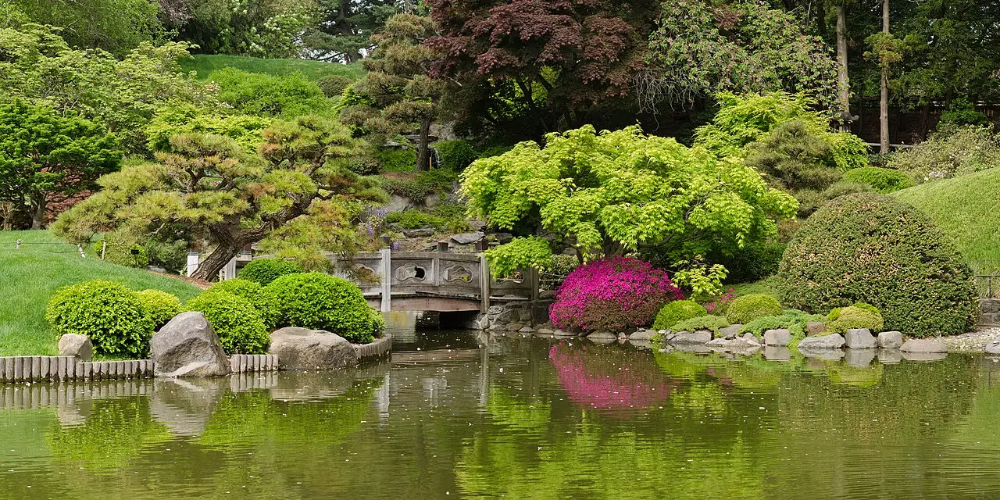

Verdance Paysage · Création & entretien
Des jardins qui suivent les saisons.
Nous dessinons, plantons et entretenons des jardins pensés pour être vécus, beaux en toute saison. Explorez le plan : chaque point est une prestation.
Choisissez la saison
1
Création de jardin
Plan d’ensemble, choix des végétaux selon l’exposition et le sol, mise en œuvre complète.
Idéal pour un terrain neuf ou à repenser
Photo d’illustration (fausse photo)